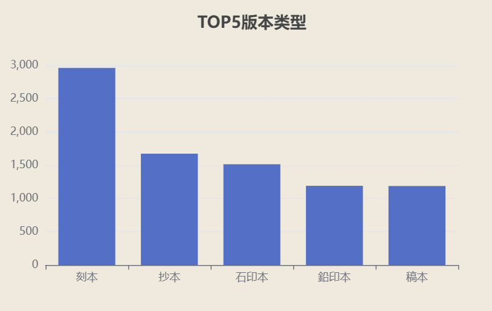

中华古籍之美
新中国成立后，党和政府制定了一系列保护古籍的法规制度，对古籍进行集中调拨、统一保存，并投入大量人力和资金征集散落民间的善本，
初步建立了以各级各类图书馆为主体的古籍保存体系，同时着手实施《赵城金藏》《敦煌遗书》《永乐大典》及西夏文献等一系列大型珍贵古籍的修复项目。
为摸清家底，各大图书馆陆续编印了一批馆藏古籍善本书目，如《北京图书馆善本书目》《北京大学图书馆善本书目》《上海图书馆善本书目》
《复旦大学图书馆善本书目》《南京大学图书馆善本书目》《武汉大学图书馆善本书目》《广东中山图书馆馆藏善本书目》《天津市人民图书馆善本书目》等。
20世纪七十年代末，根据周恩来总理生前的嘱托，《中国古籍善本书目》的编纂得以启动，至八十年代中期完稿时，共著录全国图书馆、博物馆、
文管会等981家单位的古籍款目6万余条，收书13万部。2002年5月，由文化部和财政部主持、国家图书馆承办的“中华再造善本工程”，采用仿真影印技术，
分两期再造唐宋至明清时期的古籍善本1300余种，使之化身千万，分藏于全国各地。自2007年实施“中华古籍保护计划”以来，经文化部拟定，报国务院批准，
我国先后公布五批《国家珍贵古籍名录》(共12274部)，日前第六批的评审工作也已近完成。2010年，文化部又启动了海外古籍回归工程，
采取多种形式开展海外中文古籍的寻访、登记工作，并以回购、数字化等形式促使古籍善本回归祖国的怀抱。

唐代（618-907）
经部（15%）：儒家经典整理初具规模，但安史之乱后损毁严重。
史部（20%）：官方修史（如《贞观政要》）留存较多。
子部（10%）：佛教、道教典籍占比低（敦煌遗书未计入）。
集部（25%）：诗歌（唐诗）繁荣，个人文集传世较多。
特点：以“集部”为主导，反映文学鼎盛；子部薄弱。
宋代（960-1279）
经部（25%）：理学兴起（朱熹注经），印刷术推动经典普及。
史部（30%）：官方修史（《资治通鉴》）和私家史书（如笔记）并存。
子部（15%）：科技（《梦溪笔谈》）、医学著作增加。
集部（30%）：宋词、文人文集（如苏轼全集）盛行。
特点：四部均衡发展，史部与集部并重。
元代（1271-1368）
经部（10%）：科举中断，儒家经典研究衰退。
史部（15%）：官修《宋史》《辽史》《金史》，但民间史学弱。
子部（20%）：戏曲（元杂剧）、医学（《饮膳正要》）突出。
集部（15%）：散曲、文人诗集留存较少。
特点：子部占比最高，反映市民文化兴起；经史衰落。
明代（1368-1644）
经部（30%）：科举制度化，八股文推动经学复兴。
史部（25%）：方志（《永乐大典》辑录）、野史盛行。
子部（25%）：科技（《天工开物》）、小说（《西游记》手稿）。
集部（20%）：戏曲、文人小品文比例下降。
特点：经部强势，子部科技与文学并重。
清代（1636-1912）
经部（20%）：考据学（乾嘉学派）成果丰富。
史部（10%）：文字狱导致私史凋零，官修《四库全书》主导。
子部（30%）：学术笔记（《日知录》）、科学译著（《几何原本》）。
集部（10%）：小说（《红楼梦》）未被官方重视，留存有限。
特点：子部占比最高，反映学术多元化；集部受压制。